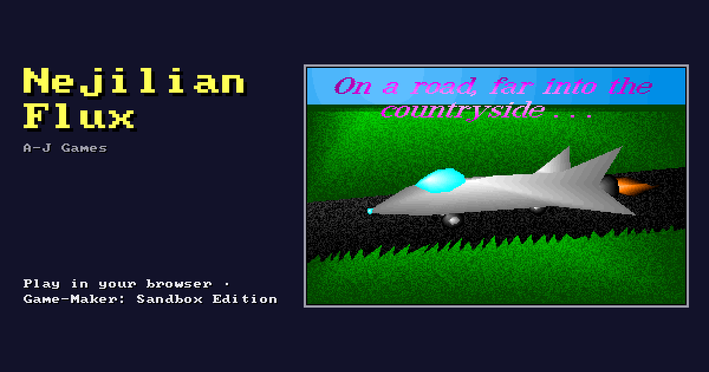

Nejilian Flux
Shareware from the 90s · A-J Games · registration $15

We should never have gone... We were so naive as to the dangers space held. From the Earth, one can see little of the rest of the galaxy, much less the universe. The first ship equiped with the flux drive changed all…
Play Nejilian Flux right here in your browser — nothing to download or install — with a keyboard, a game controller or touch controls.
Shareware: the author’s notice and how to register are in the game, shown before it starts.
More games to play · Game-Maker: Sandbox Edition: make your own game in your browser.
Made with Game-Maker: Sandbox Edition · source code · A modified fork of RSD Game-Maker 3.0 — not an original RSD release.